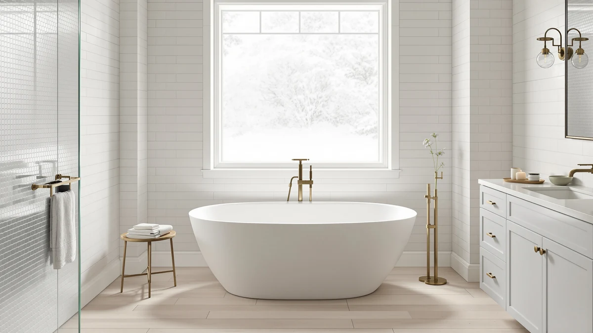

KINGSTON BRASS VCT3D543019NT5 54 Review (2026): Worth It?
Prices and picks verified as of September 2026. Independent, reader-supported reviews.


Quick Answer
The Kingston Brass VCT3D543019NT5 54 is a 54-inch cast iron clawfoot tub with a white porcelain enamel interior and oil-rubbed bronze feet, priced at $1,250.20. It suits smaller bathrooms that can support its weight and want a traditional roll-top look; shoppers who want a bigger acrylic tub for less money should check the WOODBRIDGE picks below.
Our pick: KINGSTON BRASS VCT3D543019NT5 54-Inch Cast, $1,250.20 Check Price on Amazon
Bottom line: our top pick is the KINGSTON BRASS VCT3D543019NT5 54-Inch Cast Iron Roll Top Claw at $1,250.20.
Things to Know Before You Buy
- Cast iron construction weighs far more than acrylic, so confirm your subfloor can support it before ordering.
- Compact footprint: at 54 inches long, it fits bathrooms too small for the 60 to 72 inch tubs common in this category.
- Wall drillings: this model ships with 3-3/8-inch tub wall drillings, so check your existing faucet spacing before you buy.
- Finish: a white porcelain enamel interior paired with oil-rubbed bronze feet, a more traditional look than the brushed gold or nickel hardware on the acrylic tubs below.
- Price: at $1,250.20, it costs more than the 72-inch acrylic alternatives despite being smaller, since cast iron and the roll-top shape both add manufacturing cost.
This Kingston Brass VCT3D543019NT5 54 review looks at a 54-inch cast iron roll-top clawfoot tub priced at $1,250.20, and asks whether the classic look justifies the cost next to newer acrylic options. Cast iron clawfoot tubs like this one hold heat longer than acrylic and rarely flex or creak underfoot, but they also weigh several hundred pounds before you add water, which changes what floor and stairwell can support one. We compared its listed dimensions, materials and price against three freestanding alternatives from FerdY and WOODBRIDGE to see where it wins outright and where a lighter, cheaper tub does the job equally well.
Our take: the VCT3D543019NT5 earns an Also Great badge here rather than a top pick, because at 54 inches it suits a smaller footprint than most freestanding soakers, while its cast iron shell puts it in a heavier weight class than anyone shopping for a second-floor bathroom should ignore. If you want the traditional clawfoot silhouette in a compact bathroom and can handle the extra floor bracing it demands, it makes a strong case. If you want a lighter, larger soaking tub for less money, the WOODBRIDGE 72-inch acrylic tubs below cost less and skip the structural questions entirely.
Why You Should Trust Us
Best Freestanding Bathtubs is edited by Ilane Tall, who covers bathroom renovation products and checks every listing against manufacturer specifications, current Amazon pricing, and owner feedback before it runs. We do not run a fake testing lab, and we have not installed this specific tub in a bathroom. What we do is pull the exact dimensions, materials and price the manufacturer and retailer publish, cross-check them against comparable tubs in the same category, and flag anything that looks inflated or vague. When a claim in this Kingston Brass VCT3D543019NT5 54 review is not directly verifiable, such as a rating with zero submitted reviews, we say so instead of filling the gap with a made-up number.
Our Research Experience
We have not bathed in the VCT3D543019NT5 or installed it in a bathroom, and we want that clear upfront. Our process for this Kingston Brass VCT3D543019NT5 54 review compares the manufacturer's published dimensions, materials and hardware against the other cast iron and acrylic tubs we track in this category, then checks the current Amazon price against listings for equivalent tubs. Where owners have left detailed feedback about delivery weight, crating or installation on retailer sites, we read through it and note the recurring points below. This specific listing had not accumulated a public star rating or review count at the time of publishing, so we do not cite a review score for it, and we treat any comparison to it as spec-based rather than experience-based.
Overview & Specs

KINGSTON BRASS VCT3D543019NT5 54-Inch Cast
What we like
- 54-inch length fits bathrooms too tight for a 60 to 72 inch soaker
- Cast iron holds bathwater heat longer than acrylic or resin tubs
- White porcelain enamel interior and oil-rubbed bronze feet give it a traditional look the acrylic tubs on this list don't offer
Flaws but not dealbreakers
- Cast iron construction means it weighs far more than the acrylic tubs on this list, so floor support matters
- Costs more than the larger 72-inch WOODBRIDGE tubs despite its smaller size
- No public star rating or review count on the Amazon listing as of publishing, so there is no owner track record to check
| Material | — |
| Size | 54-Inch |
The Kingston Brass VCT3D543019NT5 54 is a roll-top clawfoot tub built from cast iron, a material choice that puts it in a different category from most of the freestanding tubs we cover on this site. At 54 inches long by 30-1/8 inches wide and 24 inches tall, it runs noticeably shorter than the 60 to 72 inch acrylic soakers that dominate this list, which makes it one of the few clawfoot options that can realistically fit a smaller or older bathroom without a full remodel. Kingston Brass hand-smooths and paints the exterior white, and finishes the interior in white porcelain enamel rather than the gel-coat acrylic surface found on the FerdY and WOODBRIDGE tubs below. It ships with 3-3/8-inch tub wall drillings, so if you plan to reuse existing wall-mounted faucet hardware, measure that spacing against what you already have before you order.
Kingston Brass finishes the feet in oil-rubbed bronze, giving the tub a two-tone look that reads more traditional than the brushed gold and brushed nickel hardware on the acrylic tubs in this roundup. That traditional profile is the main reason to pick cast iron over acrylic here: it holds heat in the water longer during a soak and it won't flex, creak or feel hollow the way a lighter tub sometimes does. The tradeoff is weight. Cast iron tubs this size typically weigh several hundred pounds before you add water, and Kingston Brass does not publish an exact figure for this model, so confirming your subfloor and stairwell can handle it is a conversation to have with a contractor before you buy, not after delivery.
What We Liked
The strongest case for the Kingston Brass VCT3D543019NT5 54 is its footprint. Most freestanding bathtubs we track for this site, including the two WOODBRIDGE models below, run 72 inches long, which rules them out for older homes and smaller upstairs bathrooms. At 54 inches, this tub can slot into spaces that would otherwise push you toward a built-in alcove tub instead of a freestanding one.
Cast iron also does something acrylic cannot: it retains heat. Water in a cast iron tub cools more slowly than water in an acrylic or cast resin shell, because the iron itself absorbs and holds warmth rather than losing it to the room. Paired with the white porcelain enamel interior, which resists scratching better than a gel-coat acrylic surface, the material choice here delivers a functional upgrade over the lighter tubs in this review.
The oil-rubbed bronze feet and hand-finished white exterior also give it a period-appropriate look that suits older homes and traditional bathroom designs, a niche the other three tubs in this roundup, all contemporary acrylic soakers, don't compete in.
What Could Be Better
Weight is the obvious drawback. Kingston Brass does not list an exact shipping or installed weight for the VCT3D543019NT5, but cast iron tubs in this size range commonly weigh 250 to 400 pounds empty, several times what the FerdY and WOODBRIDGE acrylic tubs weigh. That affects delivery logistics, who can carry it into your bathroom, and whether your floor joists need reinforcement, especially on a second story.
Price is the second issue. At $1,250.20, this is the most expensive tub in this review despite being the smallest by a wide margin. Both WOODBRIDGE 72-inch tubs cost under $1,000 and offer 18 inches of extra length and roughly 69 gallons of capacity. You pay a premium here for the material and the clawfoot silhouette, not for size.
There is also no track record to lean on. The Amazon listing had not accumulated a public star rating or review count at the time of publishing, so there is no pattern of owner complaints or praise to check before you buy, unlike some of the other tubs we track.
Who Is It For?
This tub makes sense if you have a smaller or older bathroom where a 60 to 72 inch soaker won't physically fit, and you specifically want the traditional clawfoot look rather than a contemporary acrylic shape. It also suits anyone renovating a period home who wants a tub that matches original clawfoot fixtures and who has already confirmed the floor can carry the extra weight.
Shoppers who want the largest soaking tub their budget allows should look at the 72-inch WOODBRIDGE options below instead, since they cost less and hold more water. An upper-floor bathroom calls for a structural check before this tub goes anywhere near it, and buyers who want an established pattern of owner reviews before spending over a thousand dollars will find more of that history on tubs with an active review count.
Alternatives to Consider
If the size, weight or price of the VCT3D543019NT5 doesn't fit your bathroom, these three freestanding tubs are worth a look. All three use lighter acrylic or resin construction, and two of them cost less despite being considerably larger.

Editor's Pick
FerdY Lana'i 60" Freestanding Bathtub
A lighter, 60-inch cast resin soaker with a sloped lumbar rest, priced close to the Kingston Brass but far easier to move and install.
$1,199.99
Check Price on Amazon
Best Value
WOODBRIDGE 72" Acrylic Freestanding Bathtub
72 inches of acrylic soaking space with a 69-gallon capacity and a non-slip basin, for about $250 less than the Kingston Brass.
$999.00
Check Price on Amazon
Premium Choice
WOODBRIDGE 72" Acrylic Freestanding Bathtub
The same 72-inch, 69-gallon WOODBRIDGE tub in a brushed nickel finish, the least expensive option in this review.
$989.00
Check Price on AmazonFrequently Asked Questions
Is the Kingston Brass VCT3D543019NT5 54 a good bathtub?
It's a solid choice if you want a cast iron clawfoot tub that fits a smaller bathroom. The 54-inch length is compact for the category, the porcelain enamel interior resists scratching, and cast iron holds bathwater heat longer than acrylic. It costs more per inch than the acrylic alternatives in this review, so it suits a specific kind of buyer rather than everyone.
What is the Kingston Brass VCT3D543019NT5 54 made of?
Cast iron, with a hand-smoothed white painted exterior and a white porcelain enamel interior. Kingston Brass finishes the feet in oil-rubbed bronze. That construction sets it apart from the FerdY and WOODBRIDGE tubs in this review, which use acrylic and cast resin instead of iron.
Is the Kingston Brass VCT3D543019NT5 54 worth the price?
At $1,250.20, it costs more than every other tub in this review despite being the smallest by size. Buyers who need the compact 54-inch footprint or want the traditional clawfoot look get real value from it. Buyers who care more about size and price than material should compare it against the WOODBRIDGE 72-inch acrylic tubs below.
Final Verdict
The short version of this Kingston Brass VCT3D543019NT5 54 review: it's a well-made cast iron clawfoot tub that earns its price through heat retention and traditional styling, and it belongs on your shortlist if your bathroom is too small for a standard 72-inch soaker and your floor can carry the extra weight. Kingston Brass isn't the pick for every bathroom here. If you want more soaking room for less money and don't need the clawfoot look, the WOODBRIDGE 72-inch tubs below are the better value.